7.2. Comparisons based on data vrom one process
7.2.7. How can we determine whether the proportion of defectives produced by a process has changed from the "nominal" value?
7.2.7.1. |
Confidence limits |
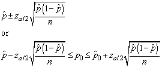
 =
the sample proportion
=
the sample proportion
p0 = the population proportion
za/2 = the critical value
from the normal distribution at a/2
n = sample size.
Note: For a one sided hypothesis, we use za and a one sided confidence interval.
Since the hypothesized value of .10 is included in the confidence band we accept the null hypothesis of no difference.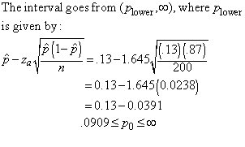
When n is small, say less than 30, the normal distribution approximate confidence bounds used above may not be accurate enough for many applications. Fortunately, there is an exact confidence bound method that is not difficult to compute when n is small.
As above, assume we want a 100(1-a)% confidence interval for the true p when x defects are found in a sample of size n.
By solving the equation
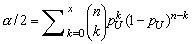
for pU, we obtain an upper 100(1-a/2)% limit for p.
Next we solve
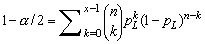
for pL, and that gives us a lower 100(1-a/2)% limit for p. The interval (pL, pU) is an exact 100(1-a)% confidence interval for p.
Note: The exact confidence intervals constructed by the above method will not be symmetric around the point estimate (x/n)..
The equations above that determine pL and pU can easily be solved using functions built into EXCEL. The steps are as follows:
To solve for pU
- 1. Open an EXCEL spreadsheet and put the starting value of .5 in the
A1 cell and put =BINOMDIST(X, N, A1, TRUE) in B1, where X and N are the
number of defectives and the sample size, respectively.Your spreadsheet
will look like the picture below.
- Put B1 in the first "Set Cell" box
- Put a/2 in the second "To Value" box
- Put A1 in the third "By Changing Cell" box
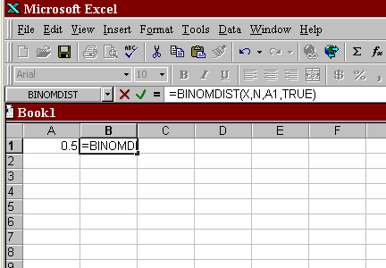
2. Open the Tools menu and click on GOAL SEEK.
3. The GOAL SEEK box requires 3 entries:
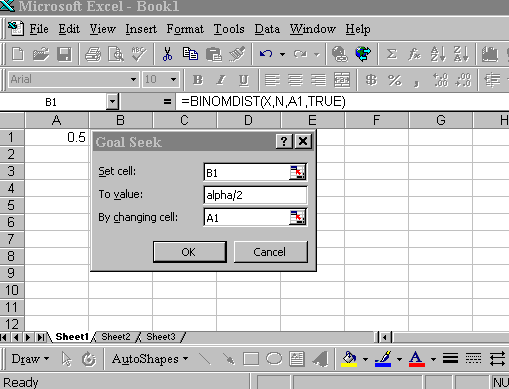
4. Click OK in the GOAL SEEK box and the number in A1 changes from .5
to pU.
1. Open an EXCEL spreadsheet and put the starting value of .5 in the A1 cell and put =BINOMDIST(X-1, N, A1, TRUE) in B1.Example of Computuing Exact Binomial Confidence Bounds2. Open the Tools menu and click on GOAL SEEK.
3. The GOAL SEEK box requires 3 entries:
4. Click OK on the GOAL SEEK box and the number in A1 changes from .5 to pL .
- Put B1 in the first "Set Cell" box
- Put 1-a/2 in the second "To Value" box
- Put A1 in the third "By Changing Cell" box.
Assume we take a sample of 20 units off a continuous production line
and find 4 defectives.  is
4/20 = 0.20. A 90% confidence interval for p is calculated as shown in
the series of spreadsheet shots below.
is
4/20 = 0.20. A 90% confidence interval for p is calculated as shown in
the series of spreadsheet shots below.
Upper Bound Calculation:
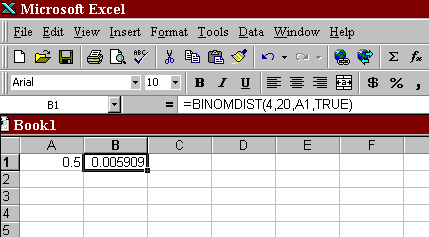
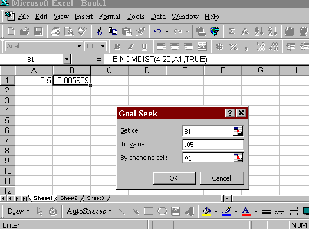
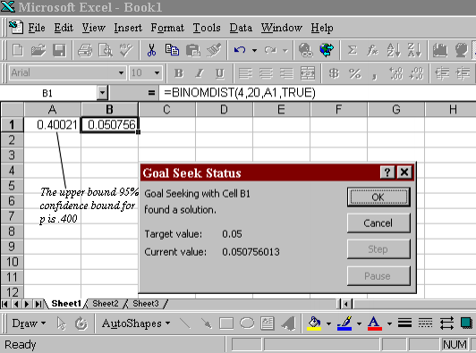
Lower Bound Calculation:
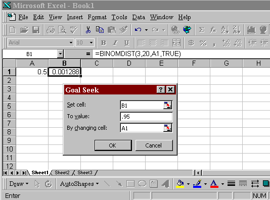
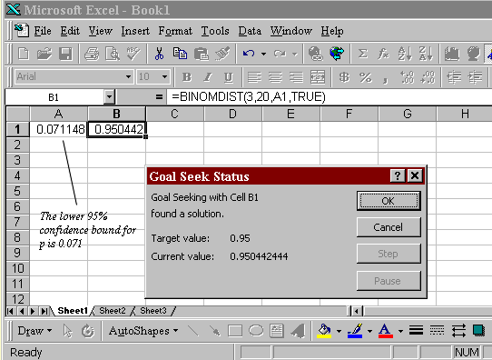
90% Confidence Interval:
An exact 90% confidence interval for p is (0.071, 0.400)
Note: The downloadable software package SEMSTAT contains a menu item "Hypothesis Testing and Confidence Intervals" . Selecting this brings up a menu that contains "Confidence Limits on Binomial Parameter". That option can be used to quickly calculate exact binomial confidence limits as shown in the screen shot below:
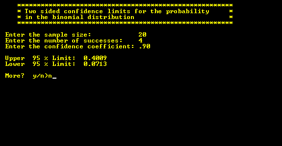
Thus far, we assumed sampling from a continuous production line or a very large or infinite population. Occasionally, we sample from a relatively small population, and the sampling is done without replacement. In this case, a correction factor, called the fpc factor, is applied. The 100(1-a) % confidence interval estimate of the proportion becomes
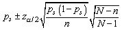
The last term,
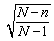
, is the fpc factor, with N = the finite population size and n = the sample size.For example, if a department manager selects 200 items from a lot of 100,000 (e.g. the finite population), and 35 defectives are observed, the 90% confidence interval estimate is:
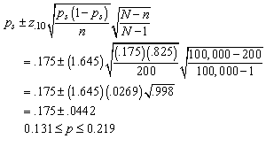